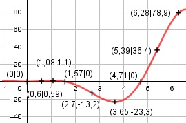

Aufgabe 179 f(x) = 2 * x2 * cos x x im Bogenmaß Produktregel erste Ableitung: u = 2 * x2, u' = 4x v = cos x, v' = -sin x f'(x) = 4x * cos x - sin x * 2x2 Summen- und 2mal-Produktregel zweite Ableitung: u = 4x, u' = 4 v = cos x, v' = -sin x f''1 = 4 * cos x + (-sin x) * 4x f''1 = 4 * cos x - 4x * sin x u = -2x2, u' = -4x v = sin x, v' = cos x f''2 = -4x * sin x + cos x * (-2x2) f''2 = -4x * sin x - 2x2 * cos x f''(x) = 4*cos x - 4x*sin x - 4x*sin x - 2x2*cos x f''(x) = 4 * cos x - 8x * sin x - 2x2 * cos x Summen- und 2mal-Produktregel dritte Ableitung: u = - 8x, u' = -8 v = sin x, v' = cos x f'''1 = -8 * sin x - 8x * cos x u = - 2x2, u' = -4x v = cos x, v' = -sin x f'''2 = -4x * cos x + (-sin x) * (-2x2) f'''2 = -4x * cos x + 2x2 * sin x f'''(x) = -4 * sin x - 8 * sin x - 8x * cos x - - 4x * cos x + 2x2 * sin x f'''(x) = -12*sin x - 12x*cos x + 2x2*sin x Definitionsbereich: 0 ≤ x ≤ 2π Wertebereich: f(6,28) = 2 * 6,282 * cos 6,28 = 78,9 -23,3 ≤ f(x) ≤ 78,9 (siehe Extrempunkte) Symmetrie zur y-Achse bzw. zum Punkt (0|0): f(-x) = 2 * (-x)2 * cos (-x) f(-x) = 2 * x2 * cos x = f(x) --> Achsensymmetrie -f(-x) = -2 * x2 * cos x ≠ f(x) --> keine Punktsymmetrie Nullstellen: f(x) = 0 2 * x2 * cos x = 0 2 * x2 = 0 |:2 x2 = 0 x1,2 = 0 N1,2(0|0) cos x = 0 x3 = π/2 = 1,57 ≙ 90° N3(1,57|0) x4 = (3/2)π = 4,71 ≙ 270° N4(4,71|0) Schnittpunkt mit der y-Achse: X = 0 f(0) = 2 * 02 * cos 0 = 0 Sy(0|0) Extrempunkte: f'(x) = 0 4x * cos x - 2x2 * sin x = 0 Wertetabelle: x 0 1 2 3 4 f'(x) 0 0,5 -10,6 -14,4 13,8 x 5 6 2π f'(x) 53,6 43,2 17,1 Nullstelle bei x1 = 0 Vorzeichenwechsel zwischen 1 und 2, gewählt Nullstelle x02 = 1,05 Vorzeichenwechsel zwischen 3 und 4, gewählt Nullstelle x03 = 3,51 x1 = 0, f(0) = 0, f''(0) = 4*cos 0 - 8*0*sin 0 - 2*02*cos 0 > 0 --> Tiefpunkt (0|0) Näherungsverfahren von Newton: f(x0) x1 = x0 - ------- f'(x0) x2 = 1,05 - 4 * 1,05 * cos 1,05 - 2 * 1,052 * sin 1,05 - ---------------------------------------------- 4*cos1,05 - 8*1,05*sin1,05 - 2*1,052*cos1,05 x2 = 1,05 - (-0,03) = 1,08 f(1,08) = 2 * 1,082 * cos 1,08 = 1,1 x3 = 3,51 - 4 * 3,51 * cos 3,51 - 2 * 3,512 * sin 3,51 - ---------------------------------------------- 4*cos3,51 - 8*3,51*sin3,51 - 2*3,512*cos3,51 x3 = 3,51 - (-0,14) = 3,65 f(3,65) = 2 * 3,652 * cos 3,65 = -23,3 f''(1,08) = 4 * cos 1,08 - 8 * 1,08 * sin 1,08 - - 2 * 1,082 * cos 1,08 < 0 --> Hochpunkt (1,08|1,1) f''(3,65) = 4 * cos 3,65 - 8 * 3,65 * sin 3,65 - - 2 * 3,652 * cos 3,65 > 0 --> Tiefpunkt (3,65|-23,3) Wendepunkte: f''(x) = 0 4 * cos x - 8 * x * sin x - 2 * x2 * cos x = 0 Wertetabelle: x 0 1 2 3 4 f''(x) 4 -4,7 -12,9 10,5 42,5 x 5 6 2π f''(x) 25,3 -51,9 -74,9 Vorzeichenwechsel zwischen 2 und 3, gewählt Nullstelle x01 = 2,55 Vorzeichenwechsel zwischen 5 und 6, gewählt Nullstelle x02 = 5,33 Näherungsverfahren von Newton: f(x0) x1 = x0 - ------- f'(x0) x1 = 2,55 - 4*cos2,55 - 8*2,55*sin2,55 - 2*2,552*cos2,55 - ---------------------------------------------- -12*sin2,55-12*2,55*cos2,55+2*2,552*sin 2,55 x1 = 2,55 - (-0,15) = 2,7 f(2,7) = 2 * 2,72 * cos 2,7 = -13,2 x2 = 5,33 - 4*cos5,33 - 8*5,33*sin5,33 - 2*5,332*cos5,33 - ---------------------------------------------- -12*sin5,33-12*5,33*cos5,33+2*5,332*sin 5,33 x2 = 5,33 - (- 0,06) = 5,39 f(5,39) = 2 * 5,392 * cos 5,39 = 36,4 f'''(2,7) = -12 * sin 2,7 - 12 * 2,7 * cos 2,7 + + 2 * 2,72 * sin 2,7 ≠ 0 --> WP1(2,7|-13,2) f'''(5,39) = -12*sin 5,39 - 12*5,39*cos 5,39 + + 2 * 5,392 * sin 5,39 ≠ 0 --> WP2(5,39|36,4) Graph:
